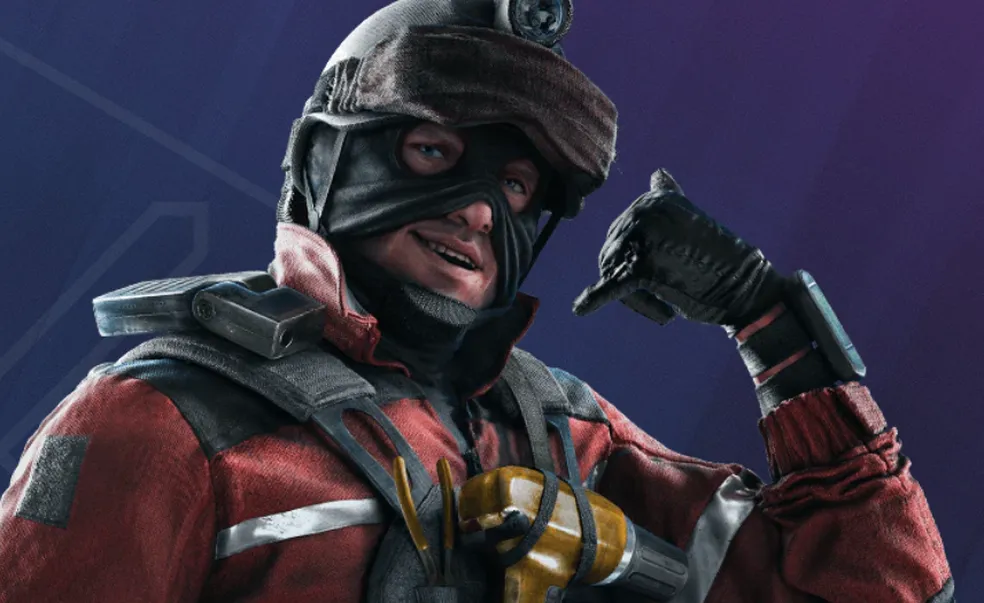
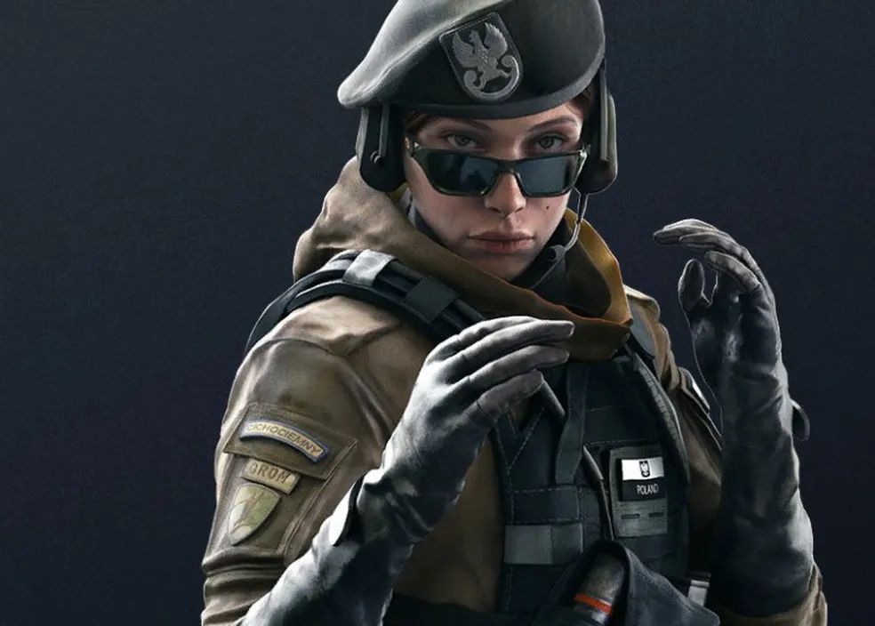

Operadores de ataque

Com um total de 60 personagens disponíveis em Rainbow Six Siege, escolher bons operadores de ataque ou defesa pode ser uma tarefa complicada para os jogadores e jogadoras do game. Para uma decisão ideal, diversos fatores devem ser levados em conta, como mapa, preferência pessoal e, principalmente, as características dos operadores. Confira uma lista com os melhores agentes para cada função, seja o usuário um novato ou alguém já mais experiente no jogo.
Ace
O operador norueguês Havard “Ace” Haughland pode utilizar o rifle de assalto AK-12 ou a espingarda M1014 como suas armas primárias, além dos gadgets granada de fumaça e carga de demolição. As duas armas primárias podem ser mortais se bem utilizadas e personalizadas com vários acessórios. O atacante também conta com o Demolidor Aquático S.E.L.M.A., que consegue explodir superfícies frágeis e reforçadas, como pisos, tetos, escotilhas e paredes. Esse equipamento único torna Ace um forte invasor com potencial para abrir um muro inteiro. Ace é o personagem perfeito para jogadores e jogadoras que desejam preencher a posição de invasor dentro de sua equipe, mas também ter acesso a um bom equipamento.
Zofia
A polonesa Zofia Bosak, da Breslávia, conta com duas armas primárias poderosas, o rifle de assalto M762, de dano alto, e a metralhadora leve LMG-E, que conta com um alto número de balas. Seu equipamento único é o versátil KS79 LIFELINE, que usa uma tecnologia de projétil ativado eletronicamente e serve, por exemplo, para atordoamento dos rivais, prejudicando a audição ou causando um efeito de tontura, para abertura de passagens e detecção de inimigos em um ambiente. Sua pistola, uma RG15, também é uma vantagem do seu arsenal, uma vez que conta com a melhor mira do jogo. Boa para médias e longas distâncias, Zofia ainda pode se levantar por conta própria ao ser derrubada.